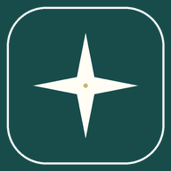

Gratis registreren
Maak een account met een profielnaam, e-mailadres en wachtwoord. Heb je al een account? Dan hoef je geen nieuw aan te maken.
Dagelijkse bemoediging en een onafhankelijke studiebibliotheek. Ontdek de Bijbel, Koran, Tora en andere levensbeschouwingen op je eigen tempo, zonder verplichtingen of opgelegde overtuigingen.
Al geregistreerd? Meld je aan

LICHTPUNT BELGIËLezen. Leren.Maak een account met een profielnaam, e-mailadres en wachtwoord. Heb je al een account? Dan hoef je geen nieuw aan te maken.
Na het aanmelden leggen we uit hoe je Lichtpunt op Android of iPhone installeert, zonder appwinkel.
Lees studies, maak persoonlijke notities en houd bij welke lessen je hebt afgerond.
Voor de persoonlijke app-route vragen we eerst een gratis account. De gewone website en alle openbare studies blijven ook zonder account leesbaar.
We controleren of je bent aangemeld…
Je bent nog niet aangemeld. Registreer gratis of meld je aan om de installatie-uitleg te openen.
Je bent aangemeld. Je kunt de app installeren.
Open deze pagina bij voorkeur in Google Chrome. Gebruik hieronder de installatieknop als die beschikbaar is.
Zie je deze optie niet? Open de pagina in Chrome in plaats van in de Facebook- of WhatsApp-browser. Als de app al geïnstalleerd is, hoef je niets meer te doen.
Open deze pagina op je iPhone in Safari (niet in de ingebouwde Facebook-browser).
Voor iPhone verschijnt geen automatische installatiepop-up. De installatie gebeurt via Safari.
✓ Lichtpunt is op dit toestel al als app geopend.